01 Rendered

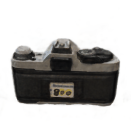
胶片相机
CameraCanon AE-1 Program 35mm Film Camera
03b0ac7d99c44197a09640179f360f3c
- PSNR ↑
- 28.47 dB
- FG PSNR ↑
- 25.66 dB
- SSIM ↑
- 0.924
- Mask IoU ↑
- 0.977
SIFT 20,586 · RANSAC 17,448 · Sparse 6,961
从第一次作业清洗后的 000-000 分片选取十个物体，完成多视图生成、特征匹配、稀疏三角化与 NeRF 训练，用环绕动画呈现新视角结果。
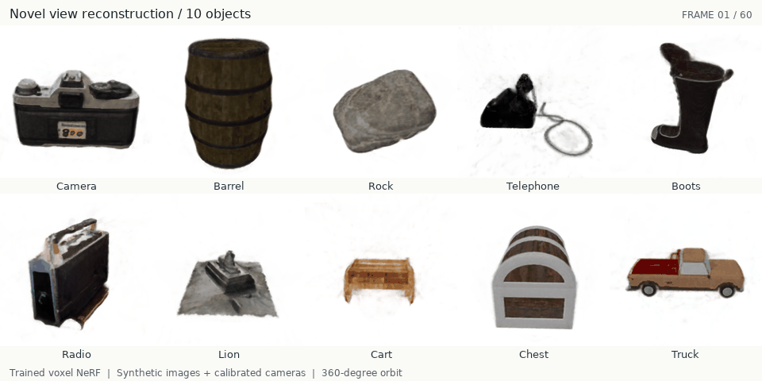
打开卡片下方的数据链接，查看匹配图、三维点云和模型权重。

Canon AE-1 Program 35mm Film Camera
03b0ac7d99c44197a09640179f360f3c
SIFT 20,586 · RANSAC 17,448 · Sparse 6,961
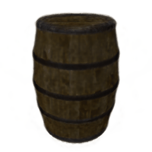
Wooden Barrel
624f8d104cee405092161fc7447c78f1
SIFT 15,830 · RANSAC 10,777 · Sparse 4,117
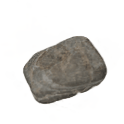
Rock Stone 15 .::RAWscan::.
3189bb396f8b4847afd3cb821dc4b919
SIFT 44,022 · RANSAC 40,013 · Sparse 13,172
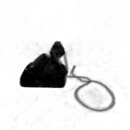
Antique World War II German Telephone
03af8be8df5946229b9bc30b6dcb2c54
SIFT 5,929 · RANSAC 3,059 · Sparse 1,462
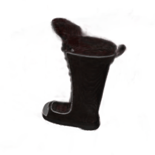
Leather Boots
01e35903910841fdb2f3c4dc41ff8b74
SIFT 4,259 · RANSAC 2,828 · Sparse 1,454
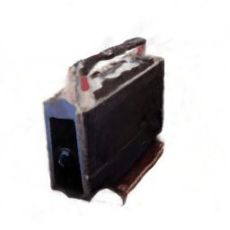
#3DST Old Radio
04c6b0d6e35446d2a42d4033f4e286c9
SIFT 18,449 · RANSAC 13,574 · Sparse 6,793
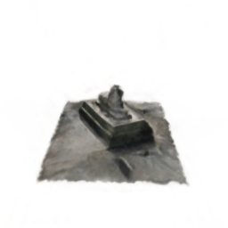
Photogrammetry - Lion Statue
c37d22acc31a41c5aa353f28a8494c1d
SIFT 15,407 · RANSAC 13,416 · Sparse 6,216
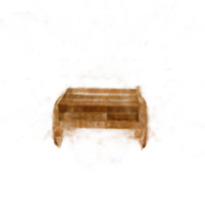
Wooden cart
034e31bc4b8a471699c3056b671b97b3
SIFT 14,527 · RANSAC 6,520 · Sparse 3,853
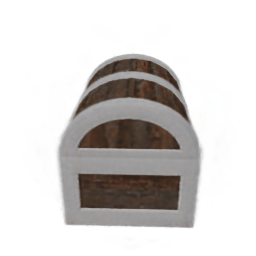
Chest
0451dc8905f140639e0d081e78ea6b86
SIFT 10,637 · RANSAC 5,972 · Sparse 3,301
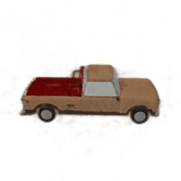
Dirty Old Truck
0563c6e7a4ac4f02b6914f4f6e32b7fa
SIFT 9,050 · RANSAC 5,520 · Sparse 3,208
这些图像由清洗后的 GLB 生成。重建阶段只读取 RGB、alpha 和已知相机，不读取源网格。独立估计的 Essential Matrix 姿态用于分析匹配质量；主要 NeRF 实验使用标定相机。Sparse PLY 是匹配三角化点云，NeRF PLY 是从学习密度提取的等值面，权重保存在 checkpoint 中。
The input is synthetic and camera calibration is known. These results evaluate a controlled image-to-radiance-field baseline; they do not claim successful pose recovery from uncalibrated real photographs. Test views are excluded from optimization.